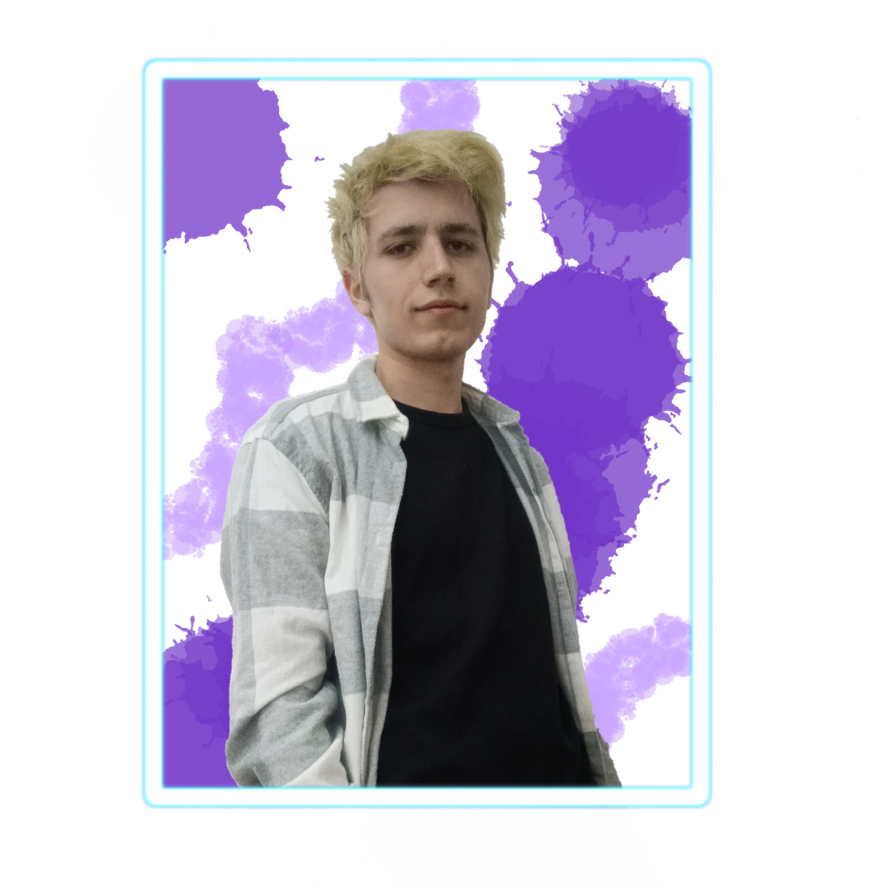

Sobre Mi
Programador
De todos los hobbies que tengo, lo que mas me gusta hacer es dibujar y ver anime,
así me distraigo de otros asuntos. Aunque a la hora de trabajar, prefiero algo mas motivador y que me active mas el celebro.
Por eso es por lo que he estudiado el ciclo de ARI (Automatismos y Robotica Industrial).
He ido utilizando distintas aplicaciónes en las clases y en mis proyectos.
Aplicaciones que manejo